Школа
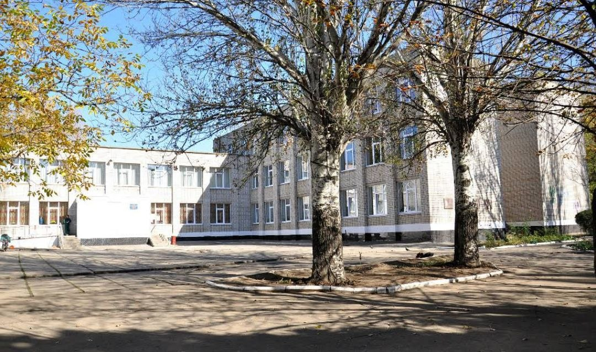
Навчалася в Ліцеї №3 міста Покров Дніпропетровської області з року. Закінчила школу у році. Найбільше школа запам'яталася вчителями, друзями та великою кількістю цікавих подій.
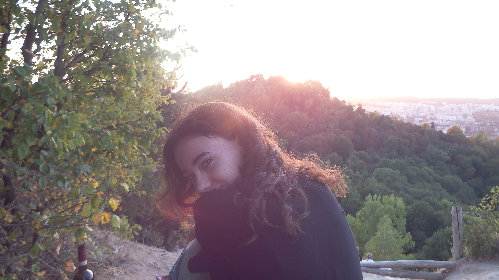
Привіт! Мене звати Анна, я студентка 3-го курсу Львівського національного університету імені Івана Франка, ФПМІ, спеціальності «Прикладна математика». Люблю займатися творчістю, слухати музику та вивчати нові речі.

Навчалася в Ліцеї №3 міста Покров Дніпропетровської області з року. Закінчила школу у році. Найбільше школа запам'яталася вчителями, друзями та великою кількістю цікавих подій.
Навчаюся у Львівському національному університеті імені Івана Франка на 3-му курсі спеціальності «Прикладна математика». Серед улюблених дисциплін — програмування, математика та веброзробка.
Подобається створювати програми та поступово бачити результат власної роботи.
Цікавий тим, що допомагає розуміти закономірності та логіку математичних процесів.
Подобається можливість одразу побачити результат написаного коду у браузері.
Одне з моїх улюблених занять для відпочинку та створення різних іграшок власноруч.
Люблю дивитися фільми та серіали різних жанрів.
Слухаю музику під час навчання, прогулянок та відпочинку, навушники завжди зі мною.
Подобається як і просто гуляти, так і поїхати в якесь інше місто на один день.
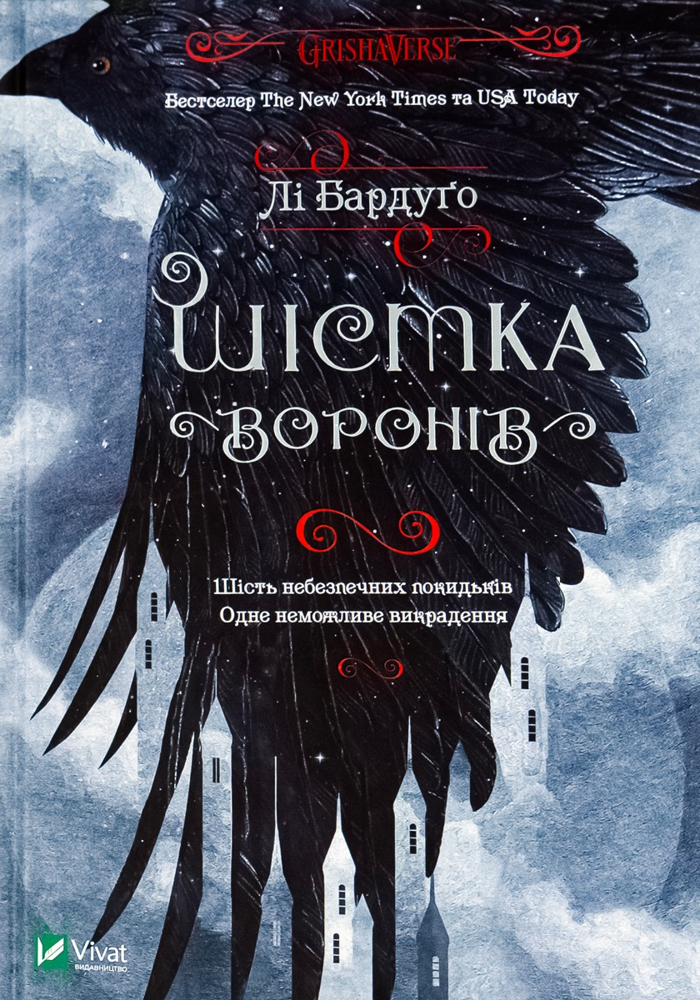
Автор: Лі Бардуго
Цікава історія з персонажами, які запам'яталися своїми характерами.
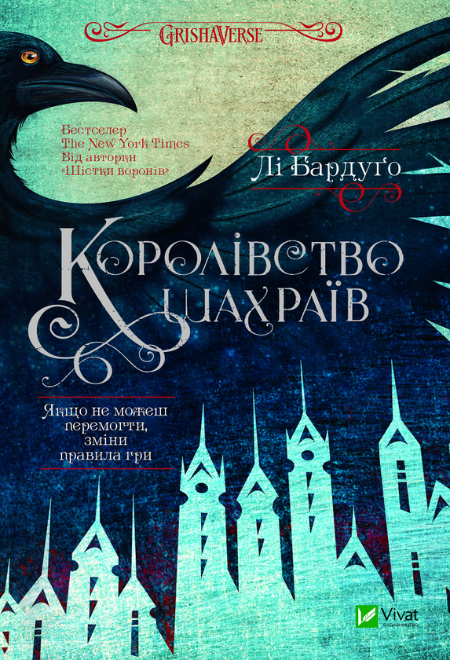
Автор: Лі Бардуго
Продовження історії персонажів з "Шістки воронів".
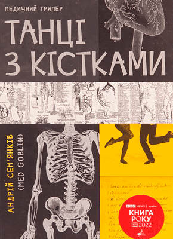
Автор: Андрій Сем'янків
Історія про те, що зробить людина заради грошей.
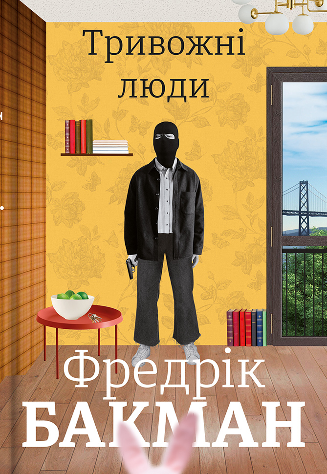
Автор: Фредрік Бакман
Зворушлива комедія про невдале пограбування.
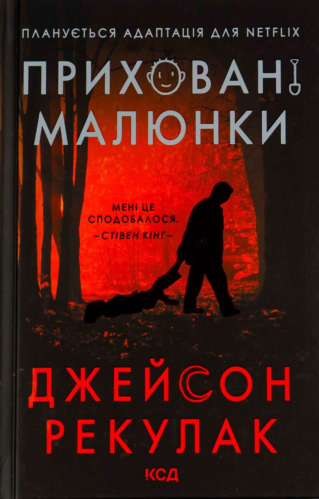
Автор:Джейсон Рекулак
Книга про дитину, яка почала малювати дивні малюнки.
Музика займає важливе місце у моєму повсякденному житті. Найчастіше слухаю альтернативний рок, інді та поп.
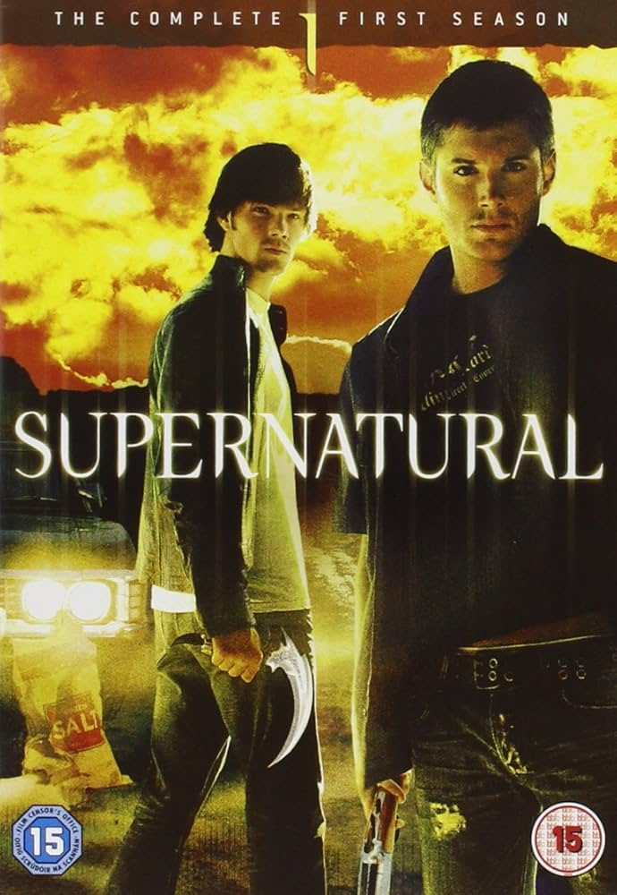
2005 - 2020 роки
Моя оцінка: 8/10
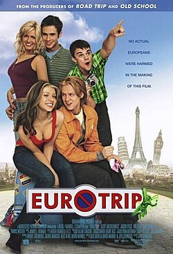
2004 рік
Моя оцінка: 10/10
Люблю багато ходити пішки, гуляти містом та вибиратися на природні маршрути.
Час від часу займаюся активностями на свіжому повітрі та люблю відкривати нові місця.
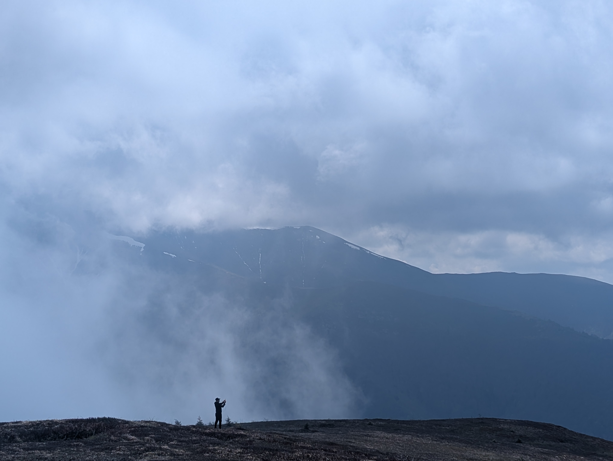
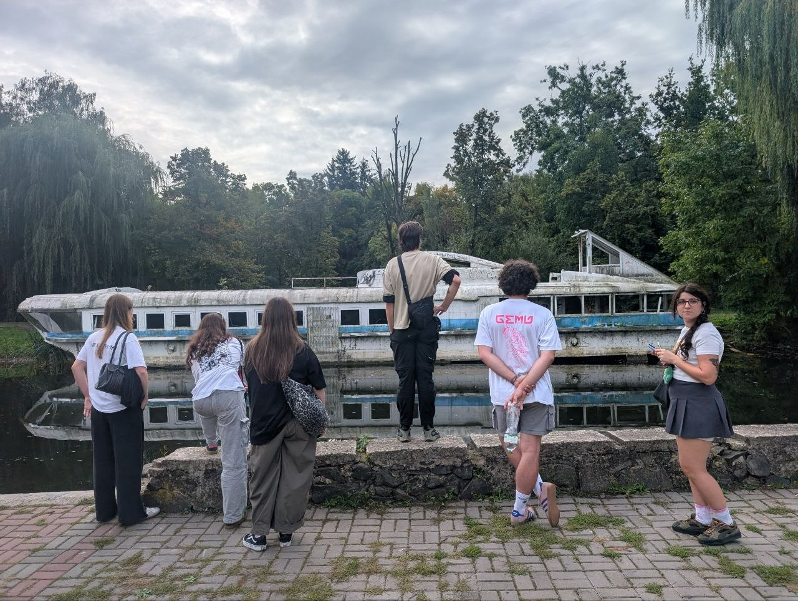
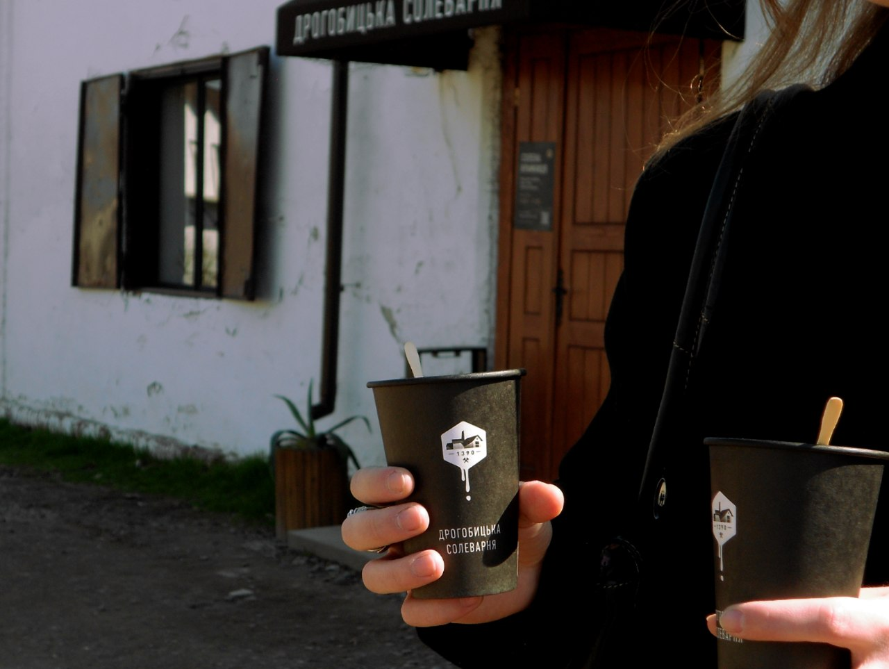
Невеликий лендинговий сайт, створений під час вивчення HTML та CSS.
Технології: HTML, CSS
Переглянути проєктНавчальний проект, створений для дисципліни "Навчальна практика". Розвинуло навички роботи в команді та дало дуже класний досвід.
Технології: Godot
Переглянути проєкт«Не сприймай життя надто серйозно - всеодно живим з нього не виберешся».
Скрябін
«Яким би не був мій вибір, поганим чи хорошим, його вибрала я, значить він і є правильним».
Невідомий автор
Мені було цікаво поєднати математику, логіку та програмування в одному напрямку.
Їздити в гори, подорожувати, фотографувати, завести кота, грати музику та стати успішним розробником.
| Напрям | Час на тиждень | Пріоритет |
|---|---|---|
| Програмування | 10 годин | Високий |
| Математика | 15 годин | Дуже високий |
| Веброзробка | 8 години | Високий |
| Англійська | 3 години | Середній |
Якщо хочете зв'язатися зі мною, заповніть форму нижче.